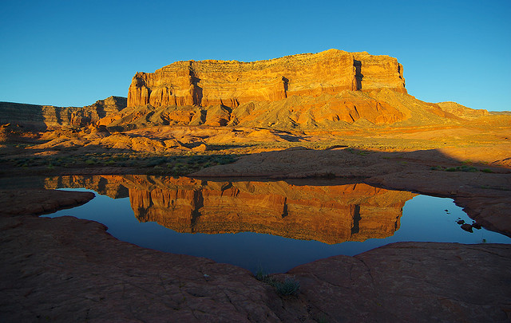

CHƯƠNG 9 : KHE DAVIS

Như khi tôi sẽ ghé thăm nền văn minh, điều đó sẽ không sớm xảy ra, tôi cho là vậy. Tôi vẫn chưa cảm thấy mệt mỏi trước thiên nhiên hoang dã; hơn hết tôi tận hưởng vẻ đẹp của nó và cuộc sống phiêu bạt, hăng hái hơn mỗi lúc. Tôi thích thú cái yên ngựa hơn những chiếc ô tô trên đường và bầu trời đêm lấp lánh ánh sao, con đường tối tăm vô định và đầy dãy khó khăn, dẫn tôi tới những nơi chưa biết, tới bất kỳ một lề đường cao tốc nào, và sự yên bình sâu sắc của thiên nhiên tới sự bất mãn nơi đô thị. Vậy thì liệu anh có buộc tội tôi vì ở đây, nơi tôi cảm thấy mình thuộc về và hòa vào làm một với thế giới xung quanh? Sự thật là tôi thấy nhớ tình bằng hữu đầy trí tuệ, nhưng đó là con số rất ít ỏi những người mà tôi có thể cùng chia sẻ về những điều vô cùng ý nghĩa đối với tôi mà tôi phải học cách kiềm chế bản thân mình. Tôi cảm thấy thế là đủ khi được bao bọc bởi vẻ đẹp thiên nhiên…
Bó hẹp trong sự mô tả hà tiện của anh, tôi biết rằng tôi không thể chịu nổi những thủ tục hàng ngày và sự buồn tẻ của đời sống mà anh buộc phải chịu đựng. Tôi không nghĩ rằng một lúc nào đó tôi có thể sống an phận thủ thường. Tôi đã biết quá nhiều về sự sâu sắc của cuộc đời, và tôi chả ưa điều gì hơn ngoại trừ sự nhượng bộ từ từ.
BỨC THƯ CUỐI CÙNG ĐƯỢC VIẾT BỞI EVERETT RUESS, CHO ANH TRAI ÔNG, WALDO, ĐỀ NGÀY 11/11/1934
Điều mà Everett Ruess theo đuổi là cái đẹp, và ông ta định hình cái đẹp theo nghĩa lãng mạn xinh đẹp. Chúng ta có thể nghiêng đầu cười nhạo sự quá trớn trong tư tưởng về cái đẹp của ông ta nếu trong đó không có một chút nào ngoài sự cống hiến toàn bộ tâm hồn ông cho nó. Duy mỹ như một căn phòng khách sạn màu mè là điều lố bịch và đôi khi có một chút thô tục; như một phương cách sống đôi khi chứa đựng tính thanh cao. Nếu ta cười nhạo Everett Ruess chúng ta sẽ buộc phải nhạo báng cả John Muir, bởi vì quả thật có rất ít khác biệt giữa họ ngoại trừ tuổi tác.
WALLACE STEGNER, VÙNG ĐẤT CỦA NGƯỜI MORMON
Lạch Davis chỉ là một con lạch nhỏ trong hầu hết thời gian của năm và đôi khi còn không được như thế. Khởi nguồn từ chân một khối đá cao được biết đến với tên gọi Fiftymile Point (Mốc Năm mươi dặm), dòng suối kéo dài bốn dặm qua bề mặt màu hồng của phiến đá nham thạch nằm về phía nam Utah trước khi cống hiến lượng nước ít ỏi của nó vào hồ Powell, hồ chứa nước lớn này dài những một trăm chín mươi dặm phía trên đập Glen Canyon. Khe Davis là một lưu vực sông nhỏ dù ta có vận dụng tới phương thức đo lường nào đi chăng nữa, nhưng đó lại là một nơi chốn đẹp đẽ, và du khách từng có dịp đi qua vùng đất khô cằn, khắc nghiệt này trong hàng thế kỷ đã tin vào sự tồn tại của một ốc đảo nằm ở cuối hẻm núi. Những hình và chữ khắc kỳ lạ trên vách đá ở vùng này có tuổi đời lên tới chín trăm năm. Những khối đá nát vụn còn sót lại của thời kỳ Kayenta Anasazi[1] đã suy tàn từ lâu, người mà tạo ra những tác phẩm nghệ thuật trên đá này, giờ đã yên nghỉ trong một hốc đá yên tĩnh nào đó. Những mảnh gốm từ thời của người Anasazi cổ đại nằm lẫn lộn trong cát cùng với những hộp thiếc han gỉ bị bỏ lại của lữ khách và cả những người chăn gia súc khi cho bầy thú của họ ghé vào uống nước, khiến hẻm núi này giống như một thứ nhà kho xuyên thế kỷ.
Trong thời kỳ ngắn ngủi của nó, Khe Davis tồn tại như một vết cắt dài và xâu trên bề mặt đá nhẵn bóng, đủ hẹp để có những chỗ có thể đứng từ bờ bên này mà nhổ nước bọt sang bờ bên kia, với bức tường đá sa thạch nhô ra bao quanh nền đất của hẻm núi. Tuy nhiên, còn có một con đường bí mật dẫn vào lòng khe thấp sâu ở điểm cuối. Chỉ ngay phía thượng lưu nơi Lạch Davis chảy vào Hồ Powell, một con dốc thoải tự nhiên chạy theo đường zig-zag đổ xuống từ mép nước của khe núi ở phía tây. Không xa chỗ đó nhánh sông này tạo thành phần đáy của khe nước, một cái cầu thang thô sơ hiện ra, ăn vào phần đá sa thạch mềm, chắc hẳn được tạo ra bởi những người chăn gia súc Mormon cách đây chừng một thế kỷ.
Vùng nông thôn bao quanh Lạch Davis là một rải đất khô cằn toàn những đá trọc trơ trụi và cát đỏ. Thảm thực vật thì tuyệt đối nghèo nàn. Mặt trời khắc nghiệt khiến bóng râm dường như là một khái niệm không tồn tại. Tuy nhiên, khi đi xuống vùng tiếp giáp với khe núi, cứ như ta thể đang bước chân vào một thế giới khác. Các cây gỗ gòn nghiêng mình duyên dáng trên những cánh hoa lê gai đang trôi dập dềnh trên nước. Các thân cỏ cao đu đưa trong gió. Những bông loa kèn sego nở bung rực rỡ như phù du, e lệ ló mình dưới chân vòm đá cao chín mươi foot, và tiếng con chim hồng tước cứ vang vọng giữa những vách núi đá nghe ra đầy ai oán từ tán lá sồi rậm rạp. Phía trên cao kia của con lạch, một dòng suối rỉ ra từ bề mặt vách đá, tưới ướt những đám rêu và dương xỉ tươi tốt bên một tảng đá nằm giữa màu xanh xum xuê của những tán sồi.
Vào sáu thập kỷ trước ở nơi ẩn náu thần tiên này, chưa đến một dặm dưới hạ lưu tính từ nơi mà những bậc thang của người Mormon gặp mặt nền của khe núi, chàng trai hai mươi hai tuổi Everett Ruess đã khắc cái tên giả của mình vào bức tường đá ngay dưới những chữ tượng hình của người Anasazi[2], và ông ta cũng lặp lại điều tương tự trên cửa vào của một công trình kiến trúc nhỏ được xây bởi những người Anasazi này nhằm cất trữ lương thực. “NEMO 1934,” là những gì mà ông đã khắc ghi lại, không còn nghi ngờ gì nữa khi nó cũng được tạo cảm hứng từ một sự thúc đẩy giống với những gì đã gây ra cho Chris McCandless khi khắc dòng chữ “Alexander Siêu lang thang/ tháng 5 1992” lên trên thành của chiếc xe buýt ở Sushana — một sự thúc đẩy không quá khác biệt, có thể là vậy, so với những gì đã tạo cảm hứng cho những người Anasazi khắc lên mặt đá những biểu tượng mà giờ đây loài người hiện đại vẫn không thể luận giải. Dù bởi lý do gì, ngay sau khi Ruess ghi danh mình lên mặt đá sa thạch, ông rời Khe Davis và biến mất một cách đầy bí ẩn, như thể đã được dự liệu từ trước. Một cuộc tìm kiếm trên quy mô rộng đã không mang tới một manh mối nào về nơi mà ông có thể đang có mặt. Cứ như thể ông ta chỉ đơn giản là biến mất, như thể người đàn ông này đã bị sa mạc cát bao la kia nuốt gọn vào lòng. Sáu mươi năm sau đó chúng ta vẫn chưa có được câu trả lời.
Everett sinh ra ở Oakland, California, vào năm 1914, là con trai út của Christopher và Stella Ruess. Christopher, một sinh viên tốt nghiệp Trường Thánh Harvard, là một nhà thơ, một nhà triết học, và là một giáo sĩ theo thuyết nhất thể[3], mặc dù ông nuôi sống bản thân và gia đình mình với vai trò của một viên chức trong hệ thống lập pháp California. Stella là một người đàn bà ương ngạnh với khuynh hướng phóng túng không chịu theo khuôn phép xã hội và có niềm đam mê đối với nghệ thuật; bản thân bà đã phát hành một cuốn tự truyện, mang tên Ruess Quartette, với trang bìa được in rõ ràng câu cách ngôn của gia đình: “Ngợi ca từng thời khắc.” Là một gia đình có truyền thống đoàn kết, nhà Ruesses cũng là một gia đình sống theo lối du cư, di chuyển từ Oakland tới Fresno tới Los Angeles tới Boston tới Brooklyn tới New Jersey tới Indiana trước khi họ quyết định cư tại miền nam California khi Everett bước vào tuổi mười bốn.
Tại Los Angeles, Everett theo học tại Trường Nghệ thuật Otis và Hollywood High. Ở tuổi mười sáu ông ta đánh dấu chuyến đi một mình đầu tiên trong đời mình, dành cả mùa hè năm 1930 để chinh phục dãy núi Yosemite và Big Sur, cuối cùng kết thúc ở Carmel. Hai ngày sau khi tiến vào vùng dân cư sau cùng, ông ta trâng tráo gõ cửa nhà Edward Weston, người ngay lập tức bị lôi cuốn bởi chàng trai trẻ với bộ dáng bơ phờ. Trong vòng hai tháng sau đó nhà nhiếp ảnh kiệt xuất khuyến khích nỗ lực không cân sức nhưng đầy hứa hẹn nơi cậu bé về hội họa và các khối màu, và cho phép Ruess quanh quẩn trong studio của ông cùng với các con trai của mình, là Neil và Cole.
Cuối mùa hè đó, Everett trở về nhà chỉ để lấy bằng tốt nghiệp trung học, mà ông nhận vào tháng 1 năm 1931. Chưa đầy một tháng sau đó ông lại trở lại với những con đường, một mình lang thang qua những hẻm núi Utah, Arizona, và New Mexico, rồi một khu vực dân cư thưa thớt và đầy bí ẩn như Alaska ngày nay. Ngoại trừ một quãng thời gian ngắn ngủi không lấy gì làm vui vẻ ở UCLA (ông bỏ ngang sau một học kỳ, làm cho cha ông rất bực bội), hai cuộc viếng thăm cha mẹ, và một mùa đông ở San Francisco (nơi ông âm thầm kết thân với Dorothea Lange, Ansel Adams, và họa sĩ Maynard Dixon), Ruess dành phần còn lại của cuộc đời thành công chóng vánh của mình vào việc di chuyển, sống đời sống phiêu bạt với một lượng tiền ít ỏi, ngủ bờ ngủ bụi, và vui vẻ chấp nhận tình trạng đói ăn trong nhiều ngày.
Ruess, theo lời của Wallace Stegner, “một con chim non lãng mạn, nhà duy mỹ ở tuổi vị thành niên, một kẻ lang thang lại giống của vùng đất hoang vu”:
Ở cái tuổi mười tám, trong một giấc mơ, cậu ta thấy mình lê bước nặng nề giữa những rừng cây, hướng về rìa vách núi, đi lang thang qua những vùng đất hoang vu thơ mộng của thế giới. Không một người đàn ông nào từng trải qua thời niên thiếu như cậu ta lại có thể quên đi những giấc mơ kiểu ấy. Điều kỳ lạ về Everett Ruess nằm ở chỗ cậu ta thức dậy và thực hiện những điều mà cậu ta vẫn hằng thấy trong mơ, không đơn giản là một kỳ nghỉ hai tuần ở những vùng đất văn minh và gọn gàng của xứ sở thần tiên, mà là hàng tháng và hàng năm giữa những kỳ quan đích thực….
Một cách có chủ ý cậu hành hạ cơ thể mình, kéo căng sức chịu đựng, như để kiểm chứng khả năng của bản thân. Cậu cẩn trọng đi theo những cung đường mà những người da đỏ và những bậc tiền bối đã cảnh cáo cậu không nên bước chân vào. Cậu chinh phục các vách đá mà hơn một lần đã làm cho cậu bị treo lơ lửng giữa bờ dốc và vực sâu ….Từ căn trại của cậu bên vũng nước hoặc khe núi hoặc trên phía cao dải đất um tùm cây lá của ngọn núi Navajo cậu đã viết một bức thư dài, giàu cảm xúc cho gia đình, nguyền rủa sự nhàm chán của đời sống văn minh, ca tụng sự dũng cảm đầy hoang dại của tuổi thanh niên khi sẵn sàng lao mình vào thế gian này.
Ruess viết ra rất nhiều những bức thư kiểu ấy, với dấu bưu điện của những địa điểm hẻo lánh mà cậu đã đi qua: Kayenta, Chinle, Lukachukai; Zion Canyon, Grand Canyon, Mesa Verde; Escalante, Rainbow Bridge, Canyon de Chelly. Đọc những lời tường thuật này (được sưu tầm trong cuốn nghiên cứu tiểu sử của W. L. Rusho, Everett Ruess: Gã lang thang tìm kiếm cái đẹp), một ai đó sẽ bất ngờ trước sự liên kết chặt chẽ của Ruess với thế giới thiên nhiên và bởi niềm đam mê đầy nông nhiệt của ông ta đối với vùng đất mà ông đã đặt chân tới. “Tôi đã có được những trải nghiệm tuyệt vời trong hoang dã kể từ lần cuối tôi viết thư cho bạn — không cưỡng lại được, không chống lại được,” ông ta bộc bạch với người bạn tên Cornel Tengel. “Nhưng rồi tôi luôn cảm thấy không thể chống cự. Tôi đòi hỏi điều này để duy trì sự sống.”
Các bức thư của Everett Ruess cho thấy sự tương đồng kỳ lạ giữa Ruess và Chris McCandless. Đây là trích đoạn trong ba bức thư của Ruess:
Tôi đã suy nghĩ rất nhiều về việc tôi sẽ luôn là kẻ lang thang đơn độc vào miền hoang dã. Trời ạ, cái cách mà những con đường mòn mê hoặc tôi. Anh không thể nào hiểu nổi sự quyến rũ không cưỡng lại nổi của nó đối với tôi là như thế nào đâu. Sau tất cả những con đường đơn độc vẫn là những điều tốt đẹp nhất …. Tôi sẽ không bao giờ dừng lại. Và cho tới khi chết, tôi sẽ tìm đến nơi hoang dã nhất, cô độc nhất, và cách biệt nhất.
Vẻ tươi đẹp của đất nước này đã trở thành một phần trong tôi. Tôi cảm thấy như được thoát ly khỏi cuộc sống và dường như thư thái hơn…. Tôi có một vài người bạn tốt, nhưng không ai thực sự hiểu được tại sao tôi lại ở đây hay những việc tôi làm. Tôi không biết một ai, mặc dù vậy, có thể hiểu dù chỉ một phần; tôi đã đi một mình quá xa.
Tôi đã luôn không hài lòng với cuộc sống mà hầu như tất cả mọi người đều đang sống. Tôi luôn mong muốn sống mãnh liệt và trọn vẹn hơn thế.
Trong cuộc phiêu lưu của tôi vào năm nay tôi đã có nhiều cơ hội hơn và nhiều cuộc phiêu lưu hoang dại hơn bao giờ hết. Quả là một vùng đất kỳ diệu mà tôi được chiêm ngưỡng — hoang dại, những miền đất hoang bao la kéo dài, những ngọn núi bằng phẳng bị quên lãng, những đỉnh núi có màu xanh vươn lên từ mặt cát đỏ của hoang mạc, những khe núi rộng năm feet và sâu hàng trăm feet, những cơn mưa to bất thần đổ sập xuống những khe núi không tên, và hàng trăm những ngôi nhà được dựng lên bên vách núi, bị bỏ hoang từ hàng nghìn năm trước.
Một nửa thế kỷ sau McCandless cũng kỳ lạ như Ruess khi cậu tuyên bố trong một tấm bưu thiếp gửi Wayne Westerberg rằng “Tôi đã quyết định rằng tôi sẽ sống cuộc đời này cho từng khoảnh khắc. Sự tự do và vẻ đẹp giản dị của nó chỉ đơn giản là quá đỗi tuyệt vời để có thể bỏ qua.” Và tiếng vọng của Ruess có thể được nghe thấy, cũng như, qua bức thư cuối cùng mà McCandless gửi cho Ronald Franz.
Ruess cũng lãng mạn như McCandless, nếu không muốn nói là còn hơn thế nữa, và hoàn toàn bất cần về sự an toàn cá nhân. Clayborn Lockett, một nhà khảo cổ học đã có thời gian ngắn thuê Ruess làm việc cho ông như là một đầu bếp khi ông tiến hành dự án khai quật khu nhà ở bên vách núi của người Anasazi vào năm 1934, kể với Rusho rằng “ông ta bị làm cho hoảng bởi thái độ không sợ gì cả mỗi khi Everett di chuyển qua những mỏm đá nguy hiểm.”
Thay vì vậy, bản thân Ruess bộc bạch trong một bức thư của mình, “Hàng trăm lần tôi cho rằng đời mình sẽ nát tan trong những khối đá sa thạch và gần như dốc đứng khi tìm nước và các căn nhà bên vách núi. Hai lần tôi suýt chết vì bị bò tót húc. Nhưng cho tới nay, tôi vẫn thoát khỏi những hiểm nguy và tiếp tục các cuộc phiêu lưu mới.” Và trong bức thư cuối cùng Ruess thú nhận một cách lãnh đạm với anh trai mình:
Em đã có một vài cuộc trốn thoát trong gang tấc khỏi rắn đuôi chuông và đá lở. Tai nạn bất ngờ mới đây nhất xảy ra khi Chocolatero [con lừa thồ của ông ta] giẫm phải tổ ong. Một vài vết chích cũng là quá nhiều đối với em. Em phải mất đến ba tới bốn ngày mới mở được mắt và bàn tay thì vẫn còn đang hồi phục.
Cũng như McCandless, Ruess không nao núng bởi sự thiếu thoải mái về mặt thể chất; có những lúc ông ta có vẻ như chào đón nó. “Trong sáu ngày tôi phải chịu đựng cơn ngộ độc thường xuân nửa năm một lần — sự chịu đựng của tôi còn lâu mới kết thúc,” ông kể lại với người bạn tên Bill Jacobs. Ông ta tiếp tục:
Trong hai ngày tôi không ý thức được rằng mình sống hay chết. Tôi đau đớn và quằn quại trong cái nóng, với bầy kiến và ruồi bao quanh tôi, trong khi chất độc rỉ ra và đóng vỏ cứng trên mặt và tay và lưng. Tôi không ăn gì cả — chẳng làm được gì ngoại trừ bình thản chịu đựng ….
Lần nào tôi cũng phải chịu đựng như thế, nhưng tôi từ chối ra khỏi rừng cây.
Và như McCandless, nhằm đánh dấu giới hạn của cuộc phiêu lưu, Ruess nghĩ ra một cái tên mới, thay vì, một loạt các cái tên. Trong một bức thư đề ngày 1 tháng 3, 1931, ông thông báo cho gia đình rằng ông sẽ tự gọi tên mình là Lan Rameau và yêu cầu họ “hãy tôn trọng cái tên này của con …. Mọi người phát âm nó theo tiếng Pháp như thế nào? Nomme de broushe, hay là gì?” Tuy nhiên, hai tháng sau đó, một bức thư khác giải thích rằng “Con đã lại thay một cái tên khác, thành Evert Rulan. Những người quen biết con trước đây nghĩ rằng cái tên này rất kỳ cục và màu mè theo kiểu Pháp.” và rồi vào tháng 8 cùng năm đó, không một lời giải thích, ông ta quay lại gọi mình là Everett Ruess và tiếp tục như vậy trong suốt ba năm tiếp theo — cho tới khi đi vào Khe Davis. Ở đó, vì một lý do không được biết tới, Everett hai lần khắc cái tên Nemo — theo tiếng Latin có nghĩa là “vô danh” — vào mặt đá sa thạch mềm của ngọn núi Navajo — và rồi biến mất. Khi đó ông ta tròn hai mươi tuổi.
Bức thư cuối cùng mà người ta nhận được từ Ruess được đóng dấu bưu điện của khu định cư của người Mormon ở Escalante, năm mươi dặm về phía bắc kể từ Khe Davis, vào ngày 11 tháng 11, 1934. Gửi tới cha mẹ và anh trai mình, họ cho biết rằng ông ta sẽ không liên lạc trong “một hay hai tháng.” Tám ngày sưu khi gửi đi bức thư, Ruess chạm trán hai người chăn cừu cách cái vịnh một dặm và ở lại trại của họ trong hai ngày; những người đàn ông này là những người cuối cùng nhìn thấy chàng thanh niên còn sống.
Sau khoảng ba tháng Ruess rời Escalante, cha mẹ ông ta nhận được một bọc thư chưa mở được gửi trả lại từ bưu điện Marble Canyon, Arizona, nơi mà những bức thư của Everett đã quá hạn lưu trữ. Vô cùng lo lắng, Christopher và Stella Ruess liên hệ với chính quyền ở Escalante, và họ đồng ý thành lập một tổ tìm kiếm vào đầu tháng 3 năm 1935. Bắt đầu từ căn lều chăn cừu nơi lần cuối cùng Ruess được nhìn thấy, họ bắt đầu lùng sục quanh vùng đất và nhanh chóng tìm thấy hai con lừa của Everett ở cuối Khe Davis, đang thỏa thuê gặm cỏ đằng sau một cái gì đấy có hình thù giống như cây san hô được dựng lên từ các bụi và cành cây khô.
Những con lừa bị giam hãm ở phía trên khe núi, ngay thượng nguồn nơi chiếc cầu thang đá của người Mormon hiện hữu; ngay dưới dòng nước không xa người tìm thấy dấu hiệu không thể nhầm lẫn về nơi cắm trại của Ruess, và rồi, ngay lối vào một kho thóc của người Anasazi bên dưới một mái vòm hang động tự nhiên, có dòng chữ “NEMO 1934” được khắc trên mặt đá. Bốn chiếc bình kiểu Anasazi được bày cẩn thận trên một phiến đá gần đó. Ba tháng sau đó những người tìm kiếm đi xa hơn một chút vị trí khắc chữ Nemo xuống dưới khe núi (nước dâng lên từ Hồ Powell, mà được làm đầy sau khi Đập Glen Canyon được hoàn thành, vào năm 1963, một thời gian rất lâu đã xóa mờ những vết khắc), nhưng trừ hai con lừa và cái chuồng của chúng, không một tài sản nào của Ruess — đồ dùng cắm trại cá nhân, nhật ký, và ký họa — được tìm thấy.
Người ta tin chắc rằng Ruess đã bị rơi xuống khi leo lên một trong những bức tường đá trên vách núi. Khiến cho sự khám phá thiên nhiên đầy nguy hiểm của nhiếp ảnh gia địa phương (phần lớn các mỏm đá có địa thế đánh đố trong khu vực đều tập trung tại khối sa thạch Navajo, bởi vì đây là một vỉa đá dễ vỡ mà đã xói mòn thành những vách đá nhẵn bóng, và phồng ra) và thiên hướng thích leo trèo những nơi nguy hiểm của Ruess, thì đây là một kết luận hoàn toàn khả thi. Tuy nhiên, công cuộc tìm kiếm tỉ mỉ ở cả gần và xa vách núi cũng không mang lại một dấu tích nào còn để lại của một con người.
Và làm thế nào để lý giải cho việc Ruess đã rời khỏi khe nước này với hàng đống trang thiết bị nặng nề như vậy mà không có sự trợ giúp của những con gia súc của ông ta? Tình huống gây bối rối này khiến một số nhà điều tra đi đến kết luận rằng Ruess đã bị giết hại bởi một nhóm những kẻ ăn trộm gia súc mà vẫn được biết tới trong khu vực, đã trộm các vật dụng của ông ta và chôn phần còn lại xuống đất hoặc ném chúng vào lòng Sông Colorado. Nhưng, ngay cả giả thuyết này, xem chừng cũng hợp lý, nhưng không thể chứng minh được bằng bất cứ manh mối nào.
Ngay sau khi Everett biến mất cha ông ta cho rằng con trai ông có cảm hứng gọi mình là Nemo từ cuốn tiểu thuyết Hai vạn dặm dưới đáy biển của đại văn hào Jules Verne — một cuốn sách mà Everett đã đọc đi đọc lại rất nhiều lần —mà trong đó nhân vật chính thuần khiết, Thuyền trưởng Nemo, chạy trốn khỏi nền văn minh và tránh khỏi “bất kỳ sợi dây nào kết nối với cuộc đời.” Nhà viết tiểu sử của Everett, W. L. Rusho, đồng ý với nhận xét của Christopher Ruess, cho rằng Everett “rút lui khỏi một xã hội có tổ chức, sự khinh bỉ của ông ta đối với niềm thỏa mãn trần thế, và việc ký tên là NEMO ở Khe Davis, tất cả những điều này đều cho thấy rằng ở ông ta có sự liên tưởng mạnh mẽ bản thân mình với nhân vật của Jules Verne.”
Sự yêu thích của Ruess đối với Thuyền trưởng Nemo có lẽ là to tát hơn một vài sự ghi chép thần thoại mà Everett nhanh chóng rút ra về thế giới sau khi rời Khe Davis và là — hoặc đã từng — vẫn còn sống, cư trú lặng lẽ đâu đó với một nhân thân giả. Một năm trước, khi đổ xăng chiếc xe tải của tôi ở trạm xăng Kingman, Arizona, tôi đã tình cờ nói chuyện về Ruess với một nhân viên trạm xăng trung niên, một người đàn ông nhỏ bé, vụng về với những vết bẩn ở khóe miệng. Nói chuyện với một giọng điệu đầy thuyết phục, ông ấy thề rằng “ông ấy biết một người anh em mà chắc chắn là rất giống với Ruess” vào cuối những năm 1960 ở một ngôi nhà làm bằng cây hẻo lánh thuộc khu Định cư của người da đỏ Navajo. Theo lời của người bạn của nhân viên này, Ruess đã kết hôn với một phụ nữ Navajo, và có với người đó ít nhất một mặt con. Sự xác thực của thông tin này và các báo cáo khác có liên quan tới tình trạng hiện tại của Ruess, không cần phải nói, là rất đáng ngờ.
Ken Sleight, người cũng đã dành rất nhiều thời gian để điều tra về câu chuyện kỳ lạ của Everett Ruess cũng như nhiều người khác, bị thuyết phục rằng người đàn ông này đã chết vào năm 1934 hoặc đầu năm 1935 và tin chắc là mình biết rõ cái chết của Ruess. Sleight, sáu mươi nhăm tuổi, là một hướng dẫn viên chuyên nghiệp về sông ngòi và sa mạc với một sự hiểu biết sâu sắc về văn hóa của người Mormon và nổi tiếng về tính khí ương ngạnh của mình. Khi Edward Abbey viết cuốn The Monkey Wrench Gang, một cuốn tiểu thuyết về đề tài giang hồ, người bạn Ken Sleight của ông được xem là niềm cảm hứng để tạo thành nhân vật Seldom Seen Smith. Sleight đã sống ở vùng này trong bốn mươi năm, đã ghé chân qua mọi nơi mà Ruess từng đến, nói chuyện với rất nhiều người từng chạm mặt Ruess, gặp gỡ cả người anh trai của Ruess, Waldo, ở Khe Davis khi thăm lại nơi mà Everett đã mất tích.
“Waldo cho rằng Everett đã bị sát hại,” Sleight nói. “Nhưng tôi không cho vậy. Tôi đã sống ở Escalante trong hai năm. Tôi đã nói chuyện với những người bị cho là đã giết chết ông ta, và tôi không cho là họ đã làm việc đó. Nhưng ai mà biết được? Anh chẳng bao giờ nói trúng được bí mật của một ai đó. Có những người khác cho rằng Everett bị trượt chân từ các mỏm đá. Ô, vâng, cũng có thể lắm chứ. Đó là một khả năng rất lớn ở vùng này. Nhưng tôi cũng không cho rằng sự việc xảy ra theo cách đó.
“Tôi sẽ nói anh nghe điều mà tôi nghĩ: tôi cho rằng ông ấy đã chết đuối.”
Nhiều năm trước, trong khi leo xuống Khe Grand, một nhánh phụ của con sông San Juan nằm cách Khe Davis bốn mươi nhăm dặm về phía đông, Sleight phát hiện thấy cái tên Nemo được khắc trên mặt đá của một kho thóc Anasazi dính đất bùn. Sleight đoán rằng Ruess khắc cái tên Nemo này không lâu sau khi rời khỏi Khe Davis.
“Sau khi dồn lũ lừa vào chuồng ở Davis,” Sleight nói, “Ruess giấu toàn bộ đồ đạc của ông ta trong một cái hang ở đâu đó và bắt đầu đi tiếp, đóng vai Thuyền trưởng Nemo. Ông ta có những người bạn da đỏ ở khu định cư Navajo, và tôi nghĩ đó là nơi ông ta nhắm đến.” Một hành trình logic tới vùng Navajo sẽ buộc Ruess vượt qua Sông Colorado tại Hole-in-the-Rock, rồi theo một con đường mòn gồ ghề được mở vào năm 1880 bởi những người khai hoang Mormon qua Núi bàn thạch Wilson và Đồi Clay, và cuối cùng đi xuống Khe Grand tới Sông San Juan, qua đó sẽ tới khu định cư. “Everett khắc cái tên Nemo trên đống đổ nát của Khe Grand, ở dưới cửa vào của con lạch Collins khoảng một dặm, rồi tiếp tục đi xuống San Juan. Và khi mà ông ta cố bơi qua con sông, ông ta bị chết đuối. Đấy là suy luận của tôi.”
Sleight tin rằng nếu như Ruess đã vượt qua sông thành công vào khu đất dành riêng cho người da đỏ, thì không có lý do nào ông ta lại không thông báo về sự có mặt của mình “ngay cả khi ông ta vẫn chơi trò dùng cái tên Nemo. Everett là một kẻ cô độc, nhưng ông ta yêu thích con người rất nhiều để có thể ở yên đó và sống ẩn dật suốt cuộc đời. Rất nhiều người trong chúng ta đều như vậy — tôi cũng như vậy, Ed Abbey cũng như vậy, và cả cái anh chàng McCandless gì đó cũng thế: Chúng tôi yêu thích tình bằng hữu, anh thấy đấy, nhưng chúng tôi không chịu nổi việc ở bên con người quá lâu. Nên chúng tôi tự biến mất, quay lại một thời gian, rồi lại biệt tích. Và đó là những gì mà Everett đã làm.
“Everett thật kỳ quặc,” Sleight thừa nhận. “Một kiểu người khác thường. Nhưng cả ông ta và McCandless, ít nhất thì họ cũng cố gắng theo đuổi ước mơ của mình. Đó là điều rất tuyệt vời về họ. Họ đã cố gắng. Không nhiều người trong chúng ta làm được vậy.”
Nhằm cố gắng hiểu rõ về Everett Ruess và Chris McCandless, điều này có thể làm sáng tỏ để xem xét hành động của họ ở một bối cảnh rộng hơn. Và nó cũng có ích khi đánh giá các trường hợp tương tự như nhau với khoảng cách của một thế kỷ.
Nằm bên ngoài bờ biển phái đông nam của Iceland là một hòn đảo thấp có tên gọi Papós. Toàn đá và không cây, thường xuyên bị tấn công bởi những cơn bão lớn ở Bắc Đại Tây Dương, nó có cái tên này từ những cư dân khai hoang đầu tiên, giờ đã bỏ đi từ lâu, các thày tu người Iceland được gọi là papar. Đi bộ dọc đường bờ biển lởm chởm đá vào một buổi chiều mùa hè, tôi mò mẫm giữa một ma trận những phiến đá nhọn hình tam giác nổi lên từ nền lãnh nguyên: vết tích của sự cư trú của những thầy tu từ cổ xưa, đã hàng trăm năm tuổi, ngang với đống đổ nát của người Anasazi ở Khe Davis.
Các thày tu có mặt ở đây từ đầu thế kỷ thứ năm và thứ sáu sau công nguyên, đã đi thuyền từ bờ tây của Ireland. Bắt đầu lên đường với một chiếc thuyền nhỏ, được gọi là thuyền da, được dựng nên từ những tấm da bò kéo căng trên khung làm bằng thân liễu gãi, rồi vượt qua một trong những mạch đường nguy hiểm nhất trên hải trình thế giới mà không biết được họ sẽ tìm thấy được thứ gì ở bến bờ bên kia.
Các thày tu papar đã đánh cược tính mạng mình — và đánh mất chúng trong một chuyến đi không được biết tới — không phải là để tìm kiếm của cải hay sự danh vọng của con người hay để tìm ra một vùng đất mới dưới sự bảo trợ của những tên bạo chúa. Như những nhà thám hiểm Bắc Cực vĩ đại và người đoạt giải thưởng Nobel Fridtjof Nansen chỉ ra, “những chuyến đi đáng ghi nhớ này … được thực hiện bởi ước muốn tìm kiếm những nơi hoang vu, nơi mà những nhà ẩn sĩ này có thể ẩn cư trong thanh bình, không bị phá vỡ bởi sự rối loạn và cám dỗ trần thế.” Khi những người Na Uy đầu tiên xuất hiện trên bờ biển Iceland vào thế kỷ thứ Chín, các thày tu papar đã quyết định rằng vùng đất này đã trở nên quá đông đúc — mặc dù nó vẫn vô cùng hoang vu. Các thày tu phản ứng lại bằng cách trèo lên những chiếc thuyền da của mình và chèo tới Greenland. Họ bị nhấn chìm trong một cơn bão nơi biển cả, bị cuốn trôi về phần rìa phía tây của thế giới đã được biết tới, không phải bởi gì hơn mà là một linh hồn đói khát, một sự khao khát một sức mạnh lạ lùng mà cầu tới trí tưởng tượng của loài người hiện đại.
Đọc về những nhà tu hành này, người ta bị xúc động bởi sự dũng cảm của họ, về sự thuần khiết không sợ hãi của họ, và cả sự mãnh liệt trong khao khát của họ. Đọc về những nhà tu hành này, người ta không thể không nghĩ về Everett Ruess và Chris McCandless.
[1] người Anasazi là những thổ dân Bắc Mỹ thời tiền sử, tổ tiên của người da đỏ Pueblo. tồn tại từ thời kỳ Basket markers, đến nay là các nhóm dân tộc Hopi và Zuni. Tuy nhiên cái tên “Anasazi” không được hậu duệ ưa thích, vì họ vẫn còn tranh cãi về nguồn gốc của mình. Người Hopi dùng từ “Hisatsinom” thay cho từ Anasazi. Từ Anasazi theo ngôn ngữ của Navajo nghĩa là “Người xưa” hoặc “Kẻ thù cũ.”
Người Anasazi sinh sống trên 1/3 lãnh thổ phía bắc Arizona và New Mexico, 1/6 lãnh thổ phía nam Utah và Colorado, và vùng phía tây Las Vegas, Nevada và phía đông thung lũng sông Rio Grande.
Nền văn hóa Anasazi: nền văn hóa cổ của dân Pueblo.
[2] Anasazi: người Pueblo cổ, là một giống người thổ dân châu Mỹ thuần chủng, sinh sống tập trung tại các vùng nam Utah, bắc Arizona, tây bắc New Mexico, và nam Colorado. Họ sinh sống trong nhiều kiểu kiến trúc nhà khác nhau, bao gồm nhà đào dưới mặt đất, nhà bên vách đá, và kiểu nhà pueblo, được thiết kế sao cho người ở có thể nhấc cầu thang lên nếu bị kẻ thù tấn công.
[3] thuyết nhất thể: thuyết bác bỏ màu nhiệm ba ngôi trong Cơ Đốc giáo và tin rằng chỉ có một Đức chúa trời mà thôi. Thuyết này cũng xem trọng lý trí và lương tri của mỗi cá nhân và tin rằng toàn thể nhân loại đều sẽ được cứu rỗi.
Comments